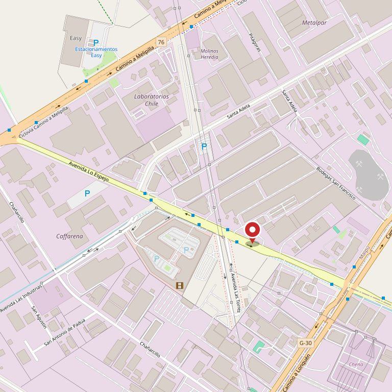

Maipú · Av. Lo Espejo
Once rubros bajo el mismo techo y 4.142 opiniones escritas por quienes ya fueron. Lo que falta no es la tienda: falta una página que conteste las tres preguntas de siempre —a qué hora, dónde y qué hay— con una sola respuesta cada una.
4.142 opiniones publicadas. Y hoy internet da cuatro horarios distintos para el mismo outlet.
La pieza del sitio
Esto es lo que la gente escribe en Google antes de subirse a la micro. Abajo está lo que hoy contesta internet —todo comprobado el 11-09-2026— y, marcado con destacador, lo único que está confirmado. La página final lleva una sola respuesta por pregunta: la que fije el outlet.
01
Todos los días desde las 10:00
Es lo único en que coinciden las cinco versiones que andan publicadas. La hora de cierre no: cambia según dónde mires.
Dos de esas versiones están en la misma página y a diez centímetros una de otra. Con 4.142 reseñas, cada persona que llega a las 18:15 y encuentra cerrado es una reseña que no se recupera.
02
Av. Lo Espejo 1-501, Maipú
Ésa es la dirección que publica el propio outlet en su página de reservas. Pero no es la única que anda dando vueltas.
Puede que sean la misma esquina y puede que no: eso no lo podemos afirmar nosotros, lo dice el outlet. Lo que sí se puede decir es que quien llega con la segunda dirección en el teléfono no está leyendo nada escrito por ellos.
03
Once rubros, dichos por ellos mismos
No los inventamos: son los once que el propio outlet lista en su página, entre la sección «Nuestros productos» y el menú de arriba.
Los once están escritos, pero ninguno lleva a ninguna parte: los enlaces del menú apuntan a un dominio que no existe. Once respuestas listas, tiradas a la basura por un enlace roto.
Cada dato de arriba se leyó el 11-09-2026 y dice de dónde salió. Lo que el outlet no publica —estacionamiento, cantidad de locales, medios de pago— no aparece inventado en ningún lado de esta demo.
Cómo se escribe un outlet
Un outlet funciona porque cada cosa tiene su etiqueta y la etiqueta dice una cosa sola. Una página es lo mismo: el horario en un lugar, la dirección en un lugar, los rubros en un lugar. Sin repetir, sin contradecirse y sin depender de que un directorio lo copie bien.
Hoy la información del outlet está escrita cinco veces en cinco lugares distintos, y ninguno de los cinco lo administra el outlet. Ésta es la etiqueta que falta: la propia.
Sin precios, a propósito. Un outlet de segunda selección cambia el stock todas las semanas y publicar un precio que ya no está es peor que no publicar ninguno.
Lo que se vende
El outlet se describe a sí mismo como venta de segunda selección a precio bajo, y en su propia página publica once rubros y tres cifras: más de cinco años de experiencia, más de 150.000 clientes y más de 200 mil seguidores. Acá están puestos donde se pueden leer.
Las seis fotos son de bancos de uso libre y no corresponden a Outlet Espacio Lo Espejo ni a sus locales. Están puestas para mostrar cómo se ve el sitio con fotos reales adentro; las de verdad las saca el outlet y se cambian en un rato.
«El outlet más barato de Chile»
lo escribe el propio outlet en la cabecera de su página, desde 2020
Comprobado el 11-09-2026
Nada de esto es una opinión sobre su página. Es lo que devolvió cada dirección al abrirla, con la fecha. Se puede repetir delante de cualquiera, en cualquier teléfono.
outlet-espacio-lo-espejo.webnode.cl
Responde. Es un Webnode gratuito armado en 2020 con la plantilla sin terminar: dentro del HTML quedó un segundo título que dice «Mi título» y, debajo, «contenido de la página». El pie dice «2020 Outlet Espacio lo Espejo».
Botón «¡COMPRA AQUÍ!»
Lleva a una tienda Jumpseller que devuelve 404. El botón más grande de la página no abre nada.
Menú: belleza · ferretería · menaje · salud…
Los once rubros apuntan a ventaespacioloespejo.cl, que no resuelve. La consulta pública de NIC Chile devuelve «Nombre de dominio no existe»: no está inscrito.
/contacto/ · rótulo «Teléfono»
Debajo del rótulo Teléfono no hay ningún teléfono: hay un correo, info@espacioloespejo.cl. Y ese dominio tampoco está inscrito en NIC Chile, así que ese correo no puede recibir nada.
Facebook · Twitter · Instagram · YouTube
Los cuatro íconos de redes están puestos en la página, pero ninguno tiene enlace: en el HTML son botones vacíos. El outlet dice tener más de 200 mil seguidores y su página no lleva a ellos.
outlet-espacio-lo-espejo.reservio.com
Ésta sí funciona. Es una agenda de terceros y de ahí salieron la dirección y el horario de 10:00 a 17:45. También publica un teléfono de ocho dígitos (98815021): a un celular chileno le falta uno.
Se probaron además espacioloespejo.cl, outletloespejo.cl y outletespacioloespejo.cl: ninguno existe en NIC Chile. El nombre que el outlet usa todos los días está libre.
Cómo llegar
La dirección es la que publica el propio outlet en su página de reservas. Las dos cosas que la gente pregunta después —dónde dejar el auto y por dónde se entra— no las publica nadie, así que acá van marcadas y las llena el outlet.
A un outlet no se va de paso: se va a propósito, muchas veces cruzando media comuna y casi siempre en auto o en micro con bolsas. Las tres cosas que deciden si el viaje se hace son la hora, la dirección y si hay dónde estacionar.
Las tres se contestan en una pantalla de teléfono, en cuatro líneas, y hoy no están escritas en ninguna página que el outlet controle.
El mapa de abajo está armado con mosaicos de OpenStreetMap servidos desde este mismo sitio: no hay iframe de Google ni ninguna petición a terceros, así que nadie queda rastreado por mirar dónde queda el outlet.

Para los locatarios
La misma página sirve para adentro. Un listado por rubro, con el nombre del local, el pasillo y qué vende, es lo que hoy no existe en ninguna parte —ni en papel ni en internet— y es lo que hace que alguien vaya directo a un local en vez de dar vueltas.
01
Nombre, rubro, ubicación adentro y un teléfono. Cuatro datos, una vez.
02
En la lista de su rubro y en el buscador de la página, sin depender de que un directorio lo copie bien.
03
Si cambia de local o de horario, se arregla y queda arreglado para todos. Sin esperar a que Google se entere.
Los tres pasos son la propuesta de cómo funcionaría el sistema para los locatarios; no es un servicio en marcha. Las fotos de esta sección son de bancos libres.
Contacto
Un outlet de este tamaño tiene que tener un teléfono publicado. Hoy hay cuatro números distintos asociados a su nombre en distintos lugares de internet, y ninguno de los cuatro aparece en su propia página. Éstos son, con la fuente de cada uno, para que el outlet diga cuál es el bueno.
No los inventamos ni los elegimos: están publicados. El problema no es que sean cuatro; es que el outlet no tiene dónde decir cuál es el suyo.
Para el dueño
Una propuesta hecha por nuestra cuenta. Outlet Espacio Lo Espejo no la encargó ni la ha revisado. Todo lo que aparece sin marcar lo leímos el 11-09-2026 en páginas públicas, y cada dato dice de dónde salió.
¿El Webnode es suyo? Aparece a su nombre, pero no lo pudimos probar: el teléfono de su ficha de negocio no está en ninguna de las tres páginas, y las dos direcciones que circulan no son la misma. Si el Webnode lo hizo otra persona, esta propuesta cambia —y hay que saberlo antes de conversar, no después.
El cierre, el estacionamiento, la cantidad de locales, los medios de pago, la segunda dirección y los tres teléfonos sin confirmar. Van con línea punteada y dicen quién los confirma. No hay precios en toda la página, a propósito.
El 11-09-2026, ninguno de los cuatro dominios con su nombre existe en NIC Chile: espacioloespejo.cl, ventaespacioloespejo.cl, outletloespejo.cl y outletespacioloespejo.cl. El correo que hoy publican cuelga justamente de uno de ésos.
Escribirme por WhatsApp cristalwebcl@gmail.com Ver otros trabajos